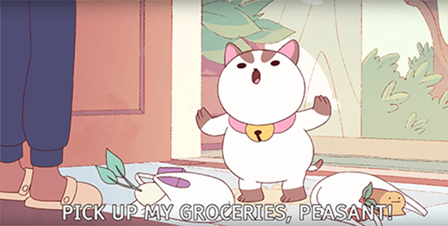

How Bee & Puppycat Fits Into "Magical Girl" Subgenre
Average Heroine
Bee is a flawed but relatable character. She hasn’t mastered many aspects of adult life. For example, she can’t seem to keep a normal job, and she’s terrible at budgeting and cooking. In typical “magical girl” anime fashion, Bee is on the adolescent path to adulthood and self-discovery.

Guardian Cat
Puppycat is Bee’s sensible animal companion. He is her guide, in a fantastical world new to her. Like other “magical girl” shows, Bee and Puppycat characterizes the male supporting character as the sensible one, while the protagonist remains silly and fun. This is aspect of the genre is a gender role reversal that differs from other types of cartoons. 3

Magic Weapon
While Bee is physically strong, she doesn’t have magical abilities. Her costume changes with each new temp job, but in the pilot episode, she’s given a sword to fight with.
Transformation
Not a lot of screen time is devoted to animating Bee’s change from everyday wear to her “work uniform,” but nevertheless, the transformation is a hallmark of the “magical girl” genre. She is surrounded by sparkles, and her silhouette changes to match the outline of her new outfit.
Levity vs Gravity
Despite the bright pastel color scheme, cutesy art style, and quirky characters, Bee and Puppycat has hinted at darker tones. Puppycat’s current form may be the result of a past betrayal, and Bee still feels sorrow over her absent dad. Bee and Puppycat’s full story potential has yet to be seen, however, since only 5 episodes have been released.